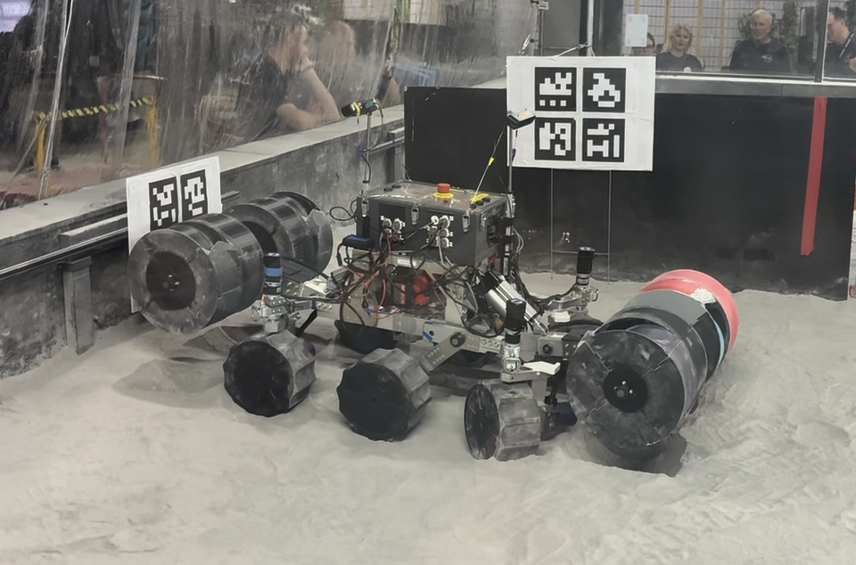

Edmund Makowski-Scott
Mechanical engineering student at the Milwaukee School of Engineering with a minor in aerospace engineering. I spend most of my time designing dig systems for lunar rovers and testing them.

- Project
- NASA Lunabotics rover, excavation system
- Role
- Lead excavation design engineer
- School
- Milwaukee School of Engineering, class of 2029
- Result
- 130% more total regolith capacity
Summary
My work so far covers excavation hardware for a lunar rover, teaching engineering tools to other students, designing STEM courses for incarcerated students, and self-directed work in simulation and manufacturing. Each has its own page.
- LunaboticsExcavation lead and secretary for MSOE's NASA Lunabotics team.
- CREATE InstituteStudent Fellow teaching and maintaining common engineering tools.
- Honors programCurriculum developer for STEM classes in Wisconsin prisons.
- PersonalTechnical skills I taught myself: CNC, FEA, OpenRocket, and DEM.
About
I grew up in Milwaukee and study mechanical engineering with an aerospace minor at the Milwaukee School of Engineering. I graduate in 2029 and am pursuing an education in engineering due to my love for better understanding how the world around me works.
Before college I spent a few years as a sailing instructor and boat repairman until I eventually had the opportunity to be a deckhand and navigator on the tall ship Denis Sullivan, sailing the Atlantic and the Caribbean, while teaching the physics of sailing.
At MSOE I am also a head curriculum developer in the Honors Program, where I work with the Wisconsin Department of Corrections and Wisconsin Department of Justice to design STEM classes for incarcerated individuals around Wisconsin.
Finally, I also spend my time at MSOE working for the CREATE Institute as a Student Fellow. I teach engineering students how to use 3D printers, machining equipment, and other common engineering skills.
Skills and software
- Design and analysis
- Onshape, SolidWorks, MATLAB, OpenRocket, finite element analysis (FEA), discrete element modeling (DEM)
- Systems engineering
- NASA systems engineering approach, verification and validation, project management
- Fabrication
- Machining, CNC, additive manufacturing, rapid prototyping, soldering, mechanical repair
Contact
- Emailmakowski-scotte@msoe.edu
- LinkedInlinkedin.com/in/edmund-makowski-scott
- GitHubgithub.com/EdmundMakowski-Scott